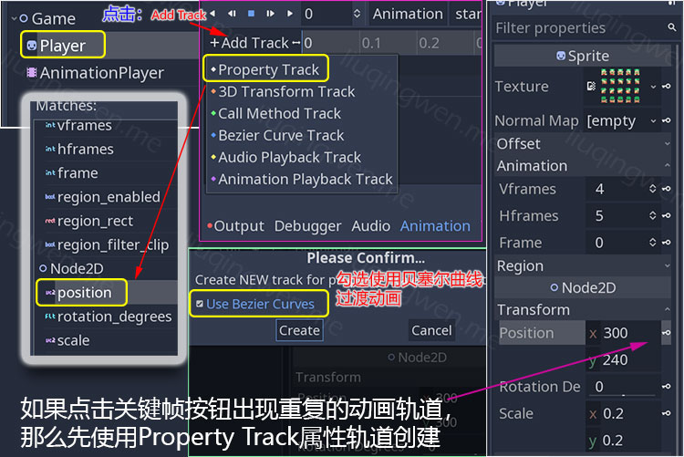
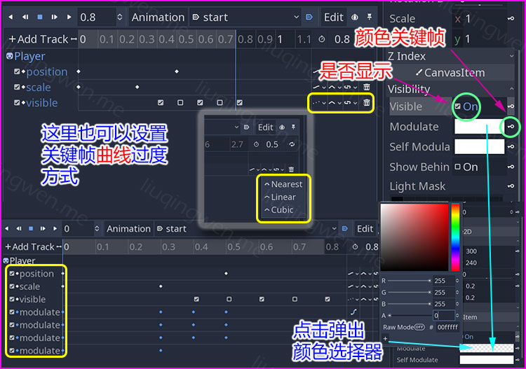
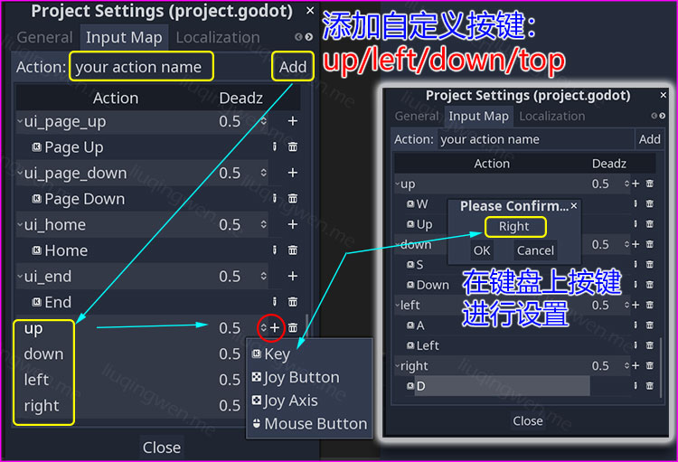
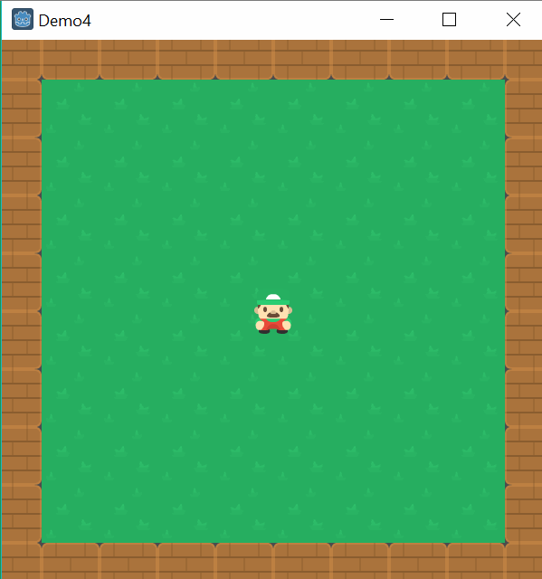
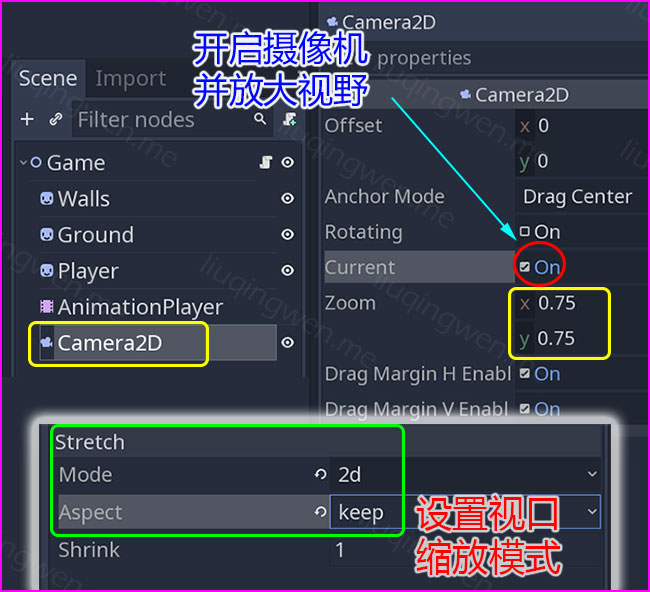
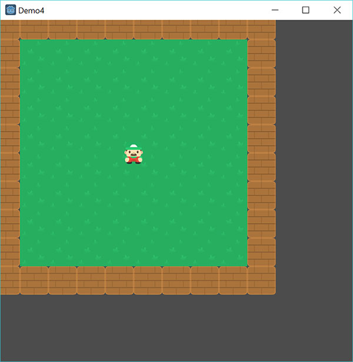

Godot3游戏引擎入门之五：上下左右移动动画（上）

一、前言
前面的几篇文章陆陆续续开始介绍 2D 游戏中对玩家的一些基本操作流程了，不过功能实现非常有限，接下来我想完完整整的打造一个小 Demo ：在封闭的游戏场景里控制玩家自由移动，从而达到一些简单的目标。那么， first thing first ，从解决上下左右移动功能实现开始！
上下左右移动也叫 Top-down 移动动画，这篇文章我会通过 Godot 中的节点以及相关的代码来实现玩家主角的基本移动控制。之后，再改造一下游戏场景，让我们的主角自由行走在有限的世界里。一如往常，老司机带路，如果你是编程新手，那么，前方高能请系好安全带啦！当然，前面的文章也讨论过了， GDScript 脚步非常简单，不熟悉的话可以浏览一下本系列之前的文章。
主要内容： Godot 2D 中玩家的上下左右移动及碰撞实现
阅读时间： 5 分钟
永久链接：http://liuqingwen.me/2018/10/10/introduction-of-godot-3-part-5-the-basic-top-down-movement-part-1/
系列主页： http://liuqingwen.me/introduction-of-godot-series/
二、正文
本篇目标
- 使用 AnimationPlayer 节点工具创建状态动画
- 使用代码控制玩家的上下左右移动功能
- 简单的摄像机使用和地图碰撞检测实现
- 通过代码实现 RigidBody2D 刚体节点的运动
创建动画
相信看了上篇文章的朋友应该对 AnimationPlayer 这个功能强大的动画工具有了一定的了解。之前只是利用它最基础的功能实现了一个简单的天鹅飞舞动画，接来下我们要使用 AnimationPlayer 节点实现稍微复杂的动画制作——玩家的各种状态动画实现。
我们先创建一个场景，根节点改名为 Game ，添加两个子节点： Sprite （命名为 Player ）和 AnimationPlayer 节点。 Player 节点的图片材质是一张 4x5 的 SpriteSheet 精灵图集，四行分别代表下、左、右、上移动动画：

和上篇文章制作天鹅动画操作一样，分别制作四个移动动画，这四个动画都设置为循环播放，动画时长和步进大家可以自己尝试进行设置不同的时间，直到自己满意为止吧，我的就随便设置了： 时长 0.8 ，步进 0.2 ，具体设置参考上一篇文章：Godot3游戏引擎入门之四：给主角添加动画（下）。接下来才是重点：我们制作一个游戏启动时刻玩家入场动画。其实这个游戏大可不必这样做，完全是为了演示 AnimationPlayer 的强大功能，并增加一些喜感吧，当然也有一定借鉴意义，哈哈。
玩家 Player 入场动画的基本思路是这样的：主角从场景中央稍微偏上的位置快速移动到屏幕中央（ position ），同时尺寸由小逐渐放大到正常缩放（ scale ），并伴随透明度从完全透明到完全不透明（ modulate/a ），动画最后再加上一段玩家闪现的动画进行强调（ visible ）。哈哈，颇有主角粉墨登场的戏份啊！欢呼吧，骚年~ :sunglasses:
思路有了，关键在于使用 AnimationPlayer 来进行创建了。之前的动画制作都是一个轨道解决一个动画，但是这个动画不同了，需要一个动画实现多个属性的控制，这里就需要多个轨道了，每个属性分别创建一个轨道，然后对属性设置关键帧进行动画控制，这里需要注意的第一点是： Godot 3.1 alpha 版本中对位置和缩放属性不能直接使用钥匙🗝️按钮创建相应的轨道和关键帧，会重复创建轨道，这应该是一个 Bug ，不过不要紧，我们使用普通的做法，手动创建 Property Track 属性轨道，选择 Player 节点的相应属性，之后可以正常使用钥匙🗝️按钮创建关键帧，部分操作如下图：

上图中的勾选贝塞尔曲线过渡方式*大家可以尝试一下，看看和平滑过渡有什么不同的效果吧。接下来，动画中透明度的设置是通过 *Sprite 节点的 Modulate 颜色属性的 Alpha(A) 通道设置实现的，至于闪现是通过控制节点的可见性 Visible 属性实现的，只要是属性， AnimationPlayer 就能创建动画，就是这么强！

最后记得把入场动画（名为 start ）设置为自动播放，不要设置循环播放，毕竟主角登场了就不要重复了。
代码控制
动画制作完后的任务就交给代码来实现了！代码和上一篇文章里的左右移动代码没啥本质区别，只是多了两个方向而已，不过有两点新鲜玩意。第一个是我设置了速度变量，它是一个 Vector2 矢量，这样做的目的是：即使我们同时按住两个按键，玩家依然可以跑动或者原地踏步！大家可以体会下和上一节的不同之处。
第二个可谓是一个可以“节约生命”的功能，还记得上一节里怎么监控按键的吗？需要一个一个的常亮比如： KEY_A/KEY_LEFT 表示 A 键和左方向键。如果你是 Unity 的开发者，那么你对按键设置肯定非常熟悉，这里我不得不说 Unity 在这方面做得还是非常棒的，对键盘、操纵杆的控制设置很到位。 Godot 中同样也可以进行简化设置，比如把 A 键和左方向键统一到自定义按键 left 中，具体设置在 Project Settings 中的 Input Map 下添加自定义输入控制：

设置完就可以开森地写代码了：
1 | extends Node2D |
完成后效果：

摄像机节点
对于上面实现的效果感想如何？嗯，移动是没问题了，入场动画有，只是没有录制进来，有兴趣的朋友可以到 Github 上下载源码自己运行看看效果。不过，问题是，玩家完全可以脱离视野离家出走啊——所谓破墙而走！三种解决方式：
- 第一种是限制移动，让玩家在固定视窗内行动，即通过判断玩家位置坐标计算有没有超出限制范围，上一篇介绍过了
- 第二种是使用物理碰撞，把假的墙壁设置为真实的墙壁，这种方式下面会将
- 第三种是非正面解决方式，即给我们的游戏添加一个摄像机，而这个摄像机时刻跟随主角运动，那么主角就不会脱离视野了
好吧，后面两种是这篇文章的目标，对于设置摄像机，和其他游戏引擎没有区别：添加一个摄像机节点，设置一下就好了，非常简单。在 Godot 中摄像机节点是 Camera2D ，添加一个节点到游戏场景后，我们通过代码控制摄像机保持和玩家位置一致，这里唯一一个要设置的地方就是：勾选 Camera2D 的 Current 属性，激活摄像机。同时，我还稍微拉伸了镜头，使得游戏场景被放大——通过设置摄像机的 Zoom 参数实现。

上图中，最下方的文字说明了视窗属性的设置：视口模式 Mode 为 2d ，缩放模式 Aspect 设置为 keep ，即保持比例，这些设置都在 Project Settings 里能找到。作用很简单，如果不设置，那么默认情况下，我们的游戏进入全屏状态后是不会进行缩放的，就像下面这样：

最后在 player.position += velocity.normalized() * speed * delta 这一句后面添加一点代码：
1 | # 省略代码...... |
运行游戏，查看效果：

接下来解决玩家移动无范围限制的问题。 :smiley:
添加碰撞
文章有点长，偷下懒，暂时到这里，接下来的内容放到下一节。 Stay tuned!
三、小结（上）
除了代码，这是一篇非常简单的文章，使用 AnimationPlayer 制作多个动画，以及单个动画多个轨道；使用 Camera2D 跟随玩家移动视野；设置按键规则和视窗缩放属性等。接下来的重点就交给本章的下节吧。
假期没有更新，带孩子在外面和家里玩了 8 天，哈哈！话说回来，嗯，还是那句：原创不易啊，希望大家喜欢！ :smile:
我的博客地址： http://liuqingwen.me ，欢迎关注我的微信公众号：